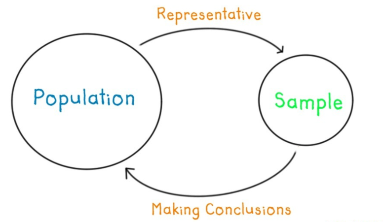
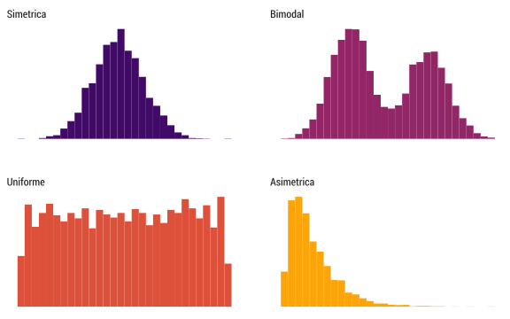
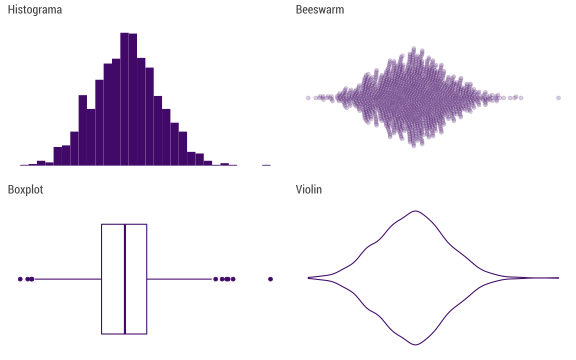
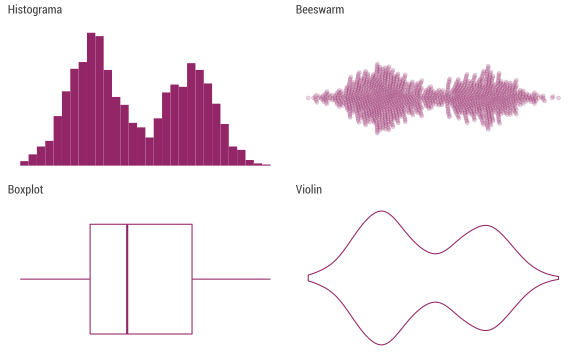
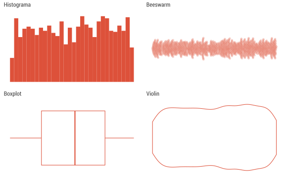
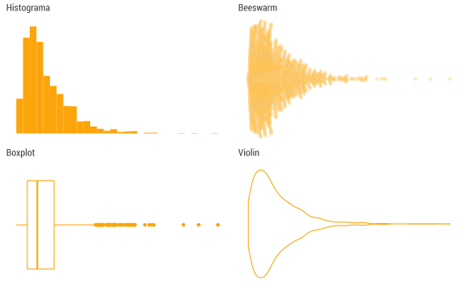

Introducción Estadística (descriptiva)
VISDATA | SANTIAGO_SCL
Joshua Kunst, Enero 2018
Jergas & Definiciones
Estadística
- Les suena?
- Han hecho algún curso?
- Hasta donde han llegado?
Definiciones
- Estadística. Rama matemática que estudia observaciones/mediciones de una población (usualmente de una muestra)
- Población. Conjunto de individuos, elementos de interés
- Muestra. Una parte (subconjunto) de la población
Tipos de Estadística
Descriptiva e Inferencial

Tipos de Estadística

Distribución
Distribución se relaciona a la forma que varían los datos de medición en medición
Estudiando la forma de como se distribuyen los datos podemos ver cuales son los más comunes, o ver si exsiten casos raros
Según la forma de la distribución, existen categorías:

Existen otras alternativas. En datos simétricos:

Datos bimodales

Datos uniformemente distribuídos

Variable Asimétrica

Estadística Descriptiva
Estadística Descriptiva
Conjunto de procedimientos para resumir datos
- Medidas de tendencia central y dispersión. No solo basta con ver que valores puede tomar una variable
- Visualización de datos. Distintos gráficos nos cuentan diferente información acerca de la variable(s)
Sintetizar información
Medidas de Tendencia y Dispersión
Son indicadores (generalmente un número) obtenidos de los datos que resumen información y nos hablan de alguna característica de la distribución de la variable
Nos ayudan a tener una idea más fina en donde se concentran las variables y que tan concentrados están los valores
Medidas de Tendencia Central
Nos señalan el valor en torno al cual se concentran los datos
- Media o Promedio: La suma de los datos dividido por la cantidad de los mismos
- Mediana: Es el valor que está al medio cuando los datos se ordenan
- Moda: Es el valor que más se repite. Este se usa cuando la variable es discreta
Medidas de Dispersión
Son valores que nos describen la dispersión de los datos. Es decir, que tan concentrados están:
- Desviación estándar: Mide el grado de dispersión en torno a la media
- Rango: Es el tamaño del intervalo que cubren los datos, el mayor valor menos el mínimo
- Quantiles: Valores donde se acumula % de información